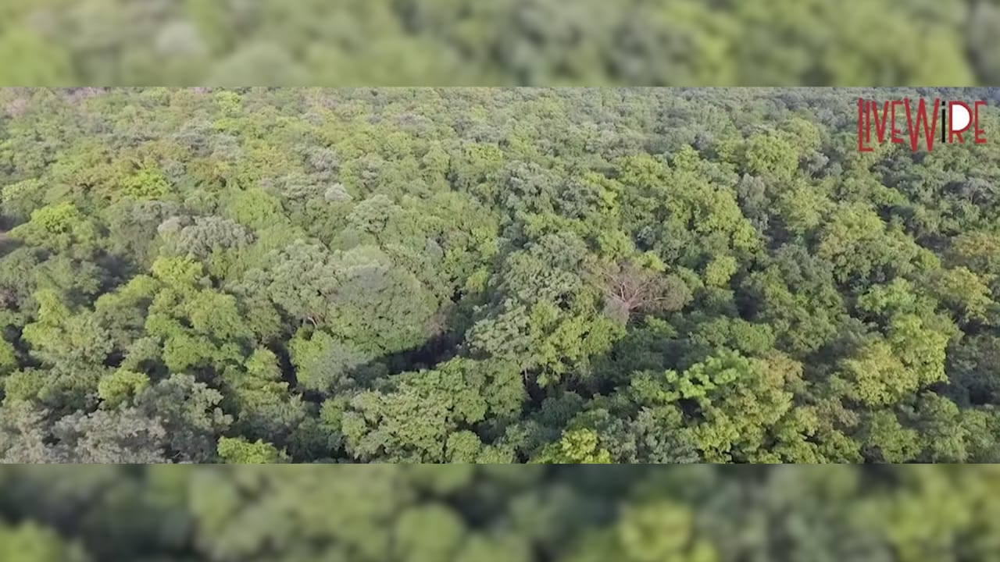
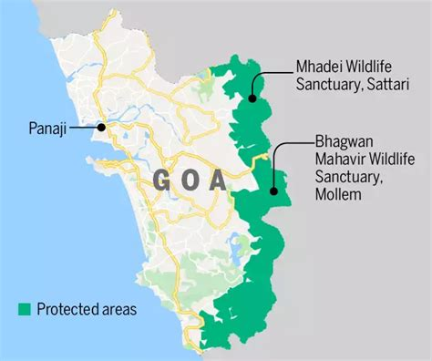

Tackling deforestation in Mollem and Mhadei
The Government of Goa has approved multiple infrastructure projects that cut through vital forests...
Mollem National Park and Mhadei Wildlife Sanctuary are under threat from railway lines, highways, and power projects...
Include maps, forest cover comparison, infographics here.
 Join petitions, email local MLAs, and share verified info on social media to protect Goa's forests.